RentDesk
Equipment and tool rental management for hire shops: serial-tracked inventory with QR labels, availability without double-booking, quotes, contracts and invoices, check-out and check-in with inspections and signatures, deposits, late fees, maintenance and reports.
Thank you for purchasing RentDesk. This guide takes you from the downloaded zip to a working installation, then explains each part of the application. If something is not covered here, see Support.
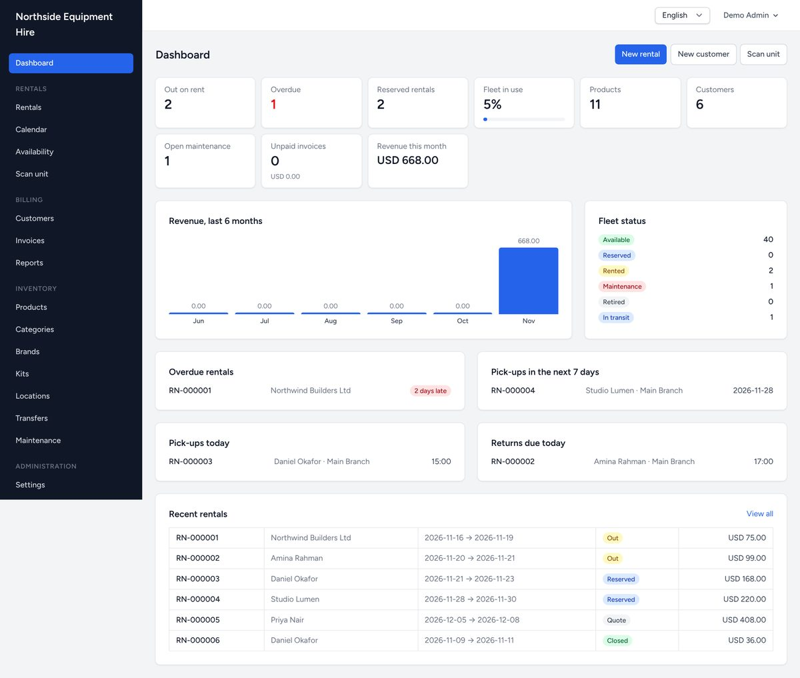
What is in the download
| Folder | Contents |
|---|---|
rentdesk/ | The complete application, ready to upload. Composer packages (vendor/) and the compiled CSS and JavaScript (public/build/) are included, so you do not need Composer or Node.js on the server. |
documentation/ | This guide. |
Server requirements
- PHP 8.3 or newer with these extensions:
openssl,pdo,pdo_mysql,mbstring,tokenizer,xml,dom,ctype,json,fileinfo.gdis recommended (images in PDFs). - MySQL 8 or MariaDB 10.6+. SQLite also works for trying the app on your own computer, but use MySQL or MariaDB for a real business.
- Apache with
mod_rewrite, LiteSpeed, or Nginx. - Write permission on
storage/,bootstrap/cache/and the main folder (for the.envfile the installer writes). - Cron jobs (most hosts offer them in the control panel).
The installer checks all of these for you and tells you exactly what is missing.
Installation
1. Create a database
In your hosting control panel (cPanel: MySQL Databases), create an empty database and a database user, and give the user all privileges on the database. Write down the database name, user name and password.
2. Upload the files
Upload the contents of the rentdesk folder to your server. Uploading the zip and extracting it on the server (cPanel File Manager → Extract) is much faster than uploading thousands of files over FTP. Make sure the hidden files .htaccess and .env.example are uploaded too.
Then choose one of these two layouts:
| Layout | When to use it | What to do |
|---|---|---|
A. Document root on public/ (recommended) |
VPS, Laravel Forge, Ploi, or any host that lets you choose the folder a domain points to. | Upload to e.g. /home/you/rentdesk and set the domain's document root to /home/you/rentdesk/public. |
B. Everything in public_html |
Shared hosting where the domain always points to public_html (or a sub-folder for a sub-domain). |
Upload into public_html. The .htaccess file in the main folder sends every request to public/ and keeps the code and .env private. This needs Apache or LiteSpeed with mod_rewrite. |
rent.example.com, not in a sub-folder like example.com/rentdesk.Nginx
Point root at the public folder and use the standard Laravel configuration:
server {
server_name rent.example.com;
root /var/www/rentdesk/public;
index index.php;
location / {
try_files $uri $uri/ /index.php?$query_string;
}
location ~ \.php$ {
fastcgi_pass unix:/run/php/php8.3-fpm.sock;
fastcgi_param SCRIPT_FILENAME $realpath_root$fastcgi_script_name;
include fastcgi_params;
}
location ~ /\.(?!well-known).* { deny all; }
}3. Permissions
On most shared hosts the defaults are fine. On a VPS, give the web server user write access:
chmod -R 775 storage bootstrap/cache
chown -R www-data:www-data storage bootstrap/cache4. Open the site
Visit your domain. Until RentDesk is installed, every page leads to the installer at /install.
The web installer
- Requirements. Every required item must show OK. Fix anything marked Missing (usually a PHP extension you can switch on in the control panel's PHP settings, or a folder permission) and reload.
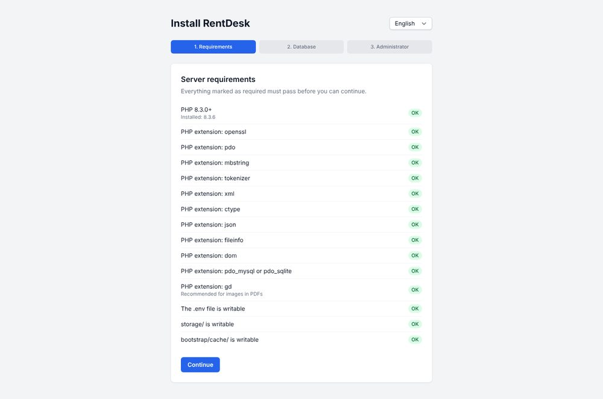
- Database. Enter the database details from step 1. The connection is tested before anything is saved; then the tables are created. On shared hosting the host is usually
localhost.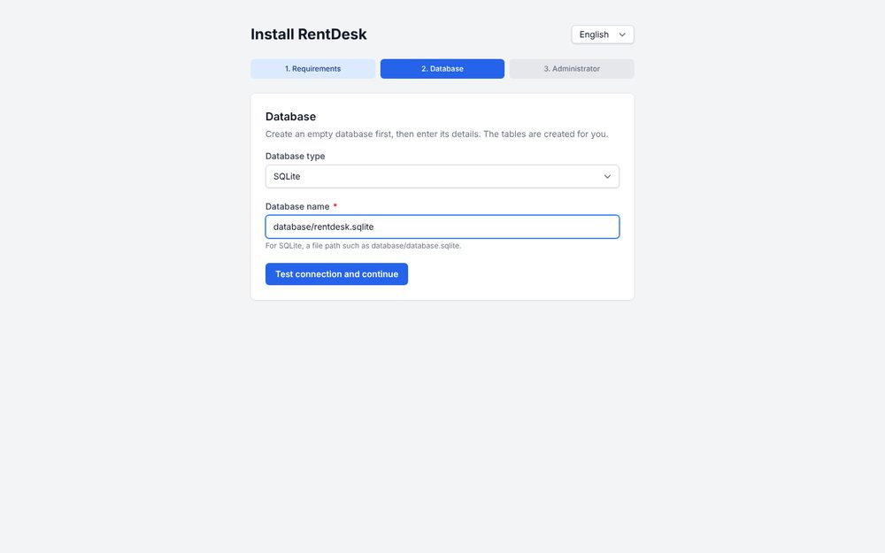
- Administrator and business. Create your own sign-in, enter your business name and three-letter currency code (USD, EUR, BDT…). Tick Add sample equipment, customers and rentals if you want something to look around in first.
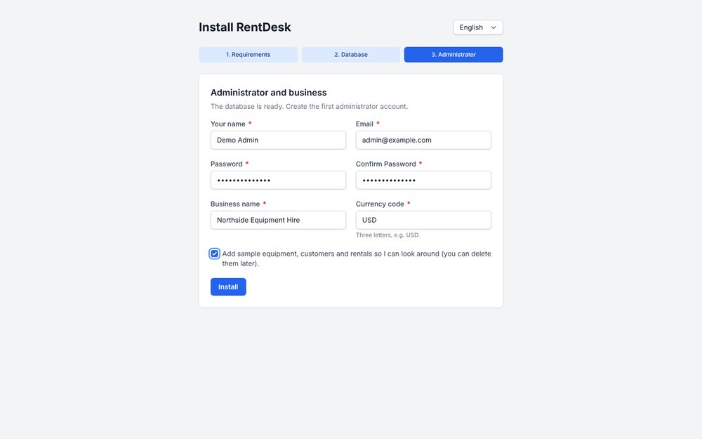
The installer writes the .env file, switches debug mode off and creates storage/app/installed.lock. After that /install is closed (it returns “404 Not Found”).
.env and storage/app/installed.lock, and open the site.Scheduler (cron job)
Late fees, overdue reminder emails and maintenance tasks are created by the scheduler. Add one cron job that runs every minute. The installer's last page shows the exact line for your server; it looks like this:
* * * * * cd /home/you/rentdesk && php artisan schedule:run >> /dev/null 2>&1In cPanel: Cron Jobs → Once Per Minute, and paste the command. If your host needs a full PHP path, use the one it shows (for example /usr/local/bin/php).
| Time (UTC) | Task |
|---|---|
| 01:00 | Creates maintenance tasks from maintenance plans |
| 06:00 | Updates late fees on overdue rentals |
| 08:00 | Emails customers whose rentals are overdue |
No queue worker is needed.
RentDesk emails invoices (with the PDF attached) and overdue reminders. Until mail is set up, messages are only written to the log. Open .env in the main folder and fill in the SMTP details from your email provider:
MAIL_MAILER=smtp
MAIL_HOST=mail.example.com
MAIL_PORT=587
MAIL_USERNAME=rentals@example.com
MAIL_PASSWORD=your-password
MAIL_FROM_ADDRESS="rentals@example.com"
MAIL_FROM_NAME="Your Business"Password-reset emails for staff use the same settings.
First steps
- Settings — check the company name, currency, tax rate, invoice due days, late fee rules, language and date format.
- Users — add an account for each member of the team and give them a role.
- Locations — add each branch or depot. Every unit belongs to a location.
- Categories and brands — group your equipment.
- Products — add what you rent, with hourly, daily, weekly or monthly rates and a deposit.
- Units — add the individual items of each product (serial numbers), then print their QR labels.
- Customers — add customers, or create them while making a rental.
If you installed the sample data, delete it from the lists when you are ready (administrators can delete records), or reinstall with an empty database.
Inventory and QR labels
A product is what you rent (for example “Hammer Drill”); a unit is one physical item with its own serial number, condition, status and location. Rates are set per product: daily, weekly and other periods, with an optional weekend price; RentDesk picks the cheapest combination for a rental period.
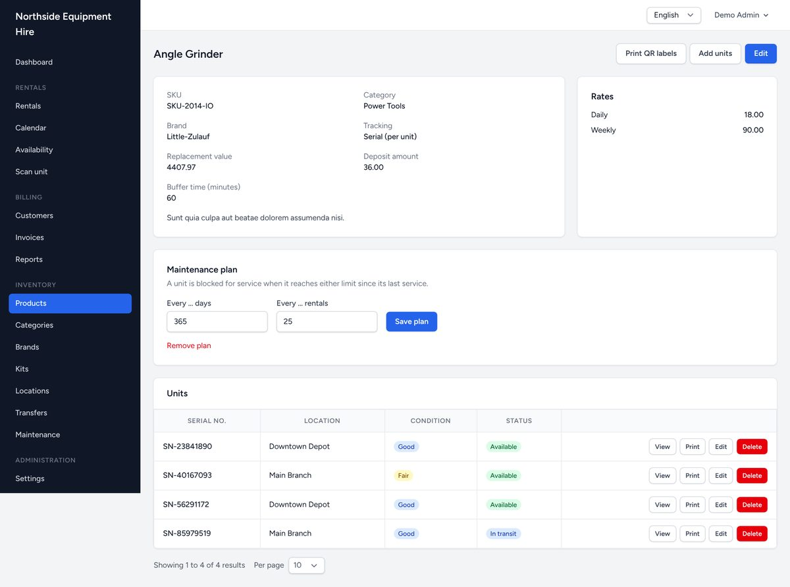
Each unit has a QR code. Use Print QR labels on a product to print a sheet of labels, and Scan unit in the menu to open a unit by scanning its label with a phone or tablet camera (the browser asks for camera permission; the site must use HTTPS for this on phones).
Unit statuses: Available, Reserved, Rented, Maintenance, In transit and Retired. They change automatically as rentals, maintenance and transfers move along.
Rental workflow
| Status | Meaning |
|---|---|
| Quote | A price offer. Units are not held yet. |
| Reserved | Confirmed. The units are held for the period and cannot be double-booked. |
| Out | Checked out: the customer has the equipment. |
| Returned | Checked in. The deposit can now be settled. |
| Closed | Finished and settled. |
| Cancelled | Cancelled before check-out; the units are free again. |
- New rental: choose the customer, location and period, then add units or kits. Use Availability or the Calendar to see what is free.
- Confirm the quote to reserve the units. Print the Contract PDF if you need a signed agreement.
- Check out: record the condition of each unit, meter readings, photos, the deposit taken and the customer's signature.
- Check in: record the return condition and any damage with its repair cost.
- Settle the deposit (refund it in full or keep part of it for damage) and create the invoice.
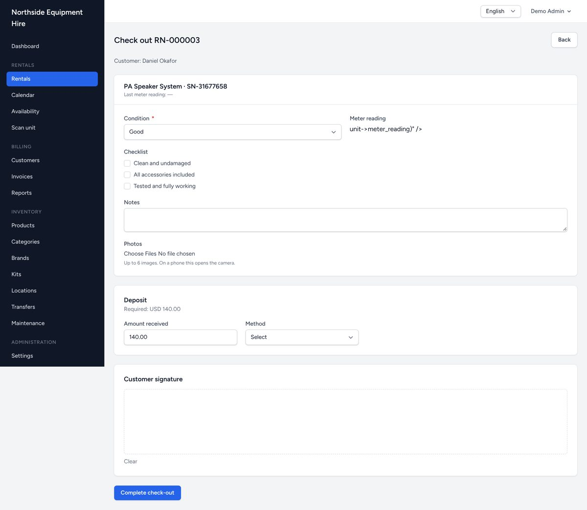
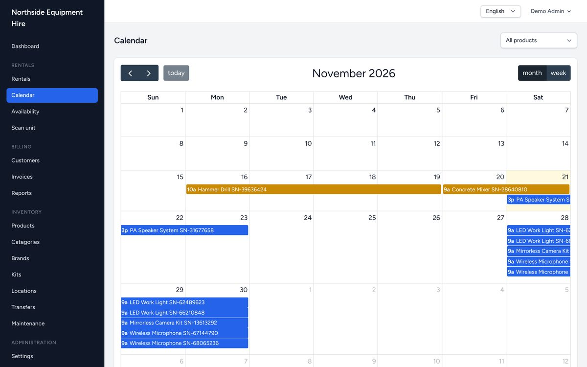
Invoices, deposits and late fees
- Invoices are created from a rental (Create invoice). They can be edited until they are paid or void, downloaded as PDF and emailed to the customer (a draft then becomes Sent). Use Mark as paid when the customer pays; the dashboard counts every sent invoice that is not paid yet. Cancelling a rental voids its unpaid invoices.
- Deposits are recorded at check-out with the payment method and settled after check-in.
- Late fees: after the grace period (Settings, default 60 minutes) each started day late costs a percentage of the rental's average daily charge (default 100%). The scheduler updates them daily and the rental page shows the amount.
- Tax is applied after discounts, at the rate set in Settings.
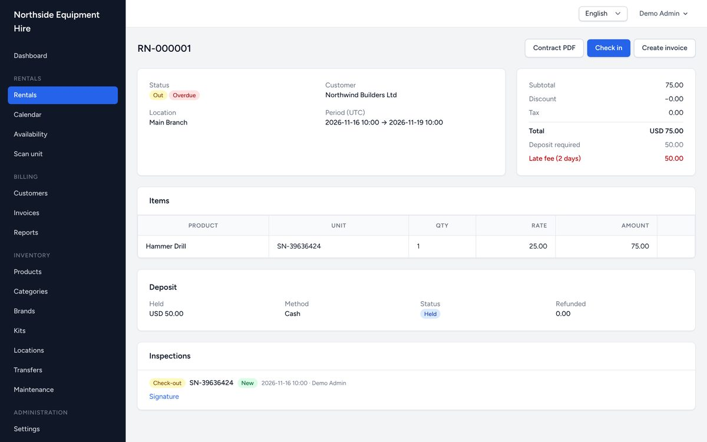
Maintenance, transfers and kits
- Maintenance plans on a product create service tasks every so many days or rentals. Units with an open task are not offered for rent. Tasks can also be added by hand from a unit.
- Transfers move units between locations: a unit is In transit until the receiving location confirms it.
- Kits bundle several products (for example a “Photo shoot kit”) with an optional package price, and can be added to a rental in one step.
Public booking form
Switch on Public booking in Settings to open a form at https://your-domain/book, which you can link from your website. Customers send a request; staff see it under Booking requests and turn it into a quote (Create quote) or reject it. The form is protected by a hidden honeypot field, a minimum fill time and rate limits (2 per minute and 6 per hour from one address).
Dashboard and reports
The dashboard shows today's pick-ups and returns, overdue rentals, fleet status, unpaid invoices and revenue for the last six months. Reports (administrators and managers) cover utilization, revenue, damage and overdue rentals for any date range, each exportable as CSV.
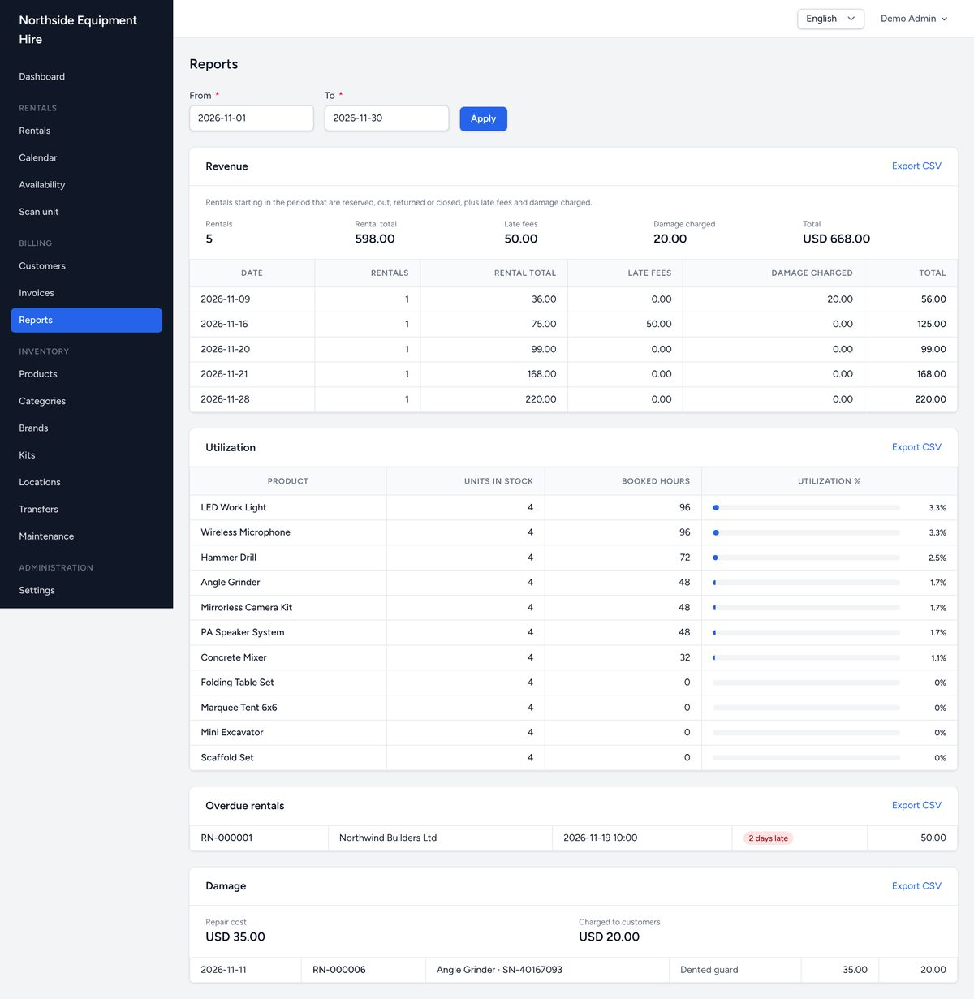
Settings
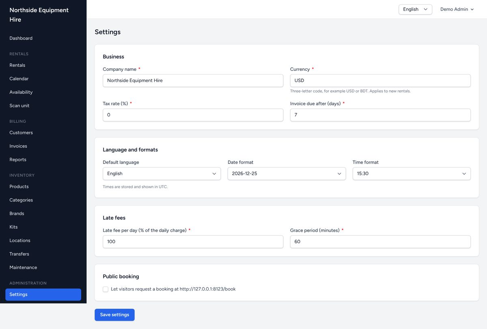
| Setting | Notes |
|---|---|
| Company name | Shown in the menu and on contracts and invoices. |
| Currency | Three-letter code. Applies to new rentals; existing rentals keep their currency. |
| Tax rate | Percent, applied after discounts. |
| Invoice due days | Days from issue until an invoice is due. |
| Late fee percent / grace minutes | See late fees. |
| Default language, date and time format | For everyone who has not picked a language themselves. |
| Public booking | Opens or closes /book. |
All times are stored and shown in UTC.
Users and roles
Administrators manage team accounts under Administration → Users: add a person with a name, email, password and role, change their role, reset their password, or delete the account.
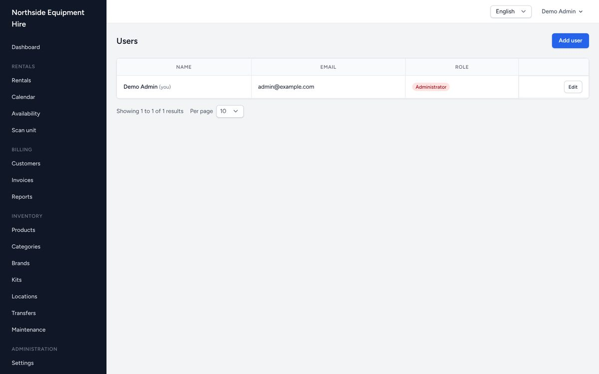
| Role | Can do |
|---|---|
| Administrator | Everything, including settings, languages, users and deleting records. |
| Manager | Everything except deleting records and changing settings, languages and users. |
| Staff | Views inventory; creates and edits rentals, customers, invoices and booking requests. No reports. |
An administrator cannot change their own role or delete their own account from the Users screen, and the only administrator cannot delete their account from the profile page, so the business can never be locked out. Everyone can change their own name, email and password under Profile. Forgotten passwords can be reset from the sign-in page once email is set up.
Languages and translation
English and Bengali (বাংলা) are included. Each user can switch language from the top bar or the sign-in page.
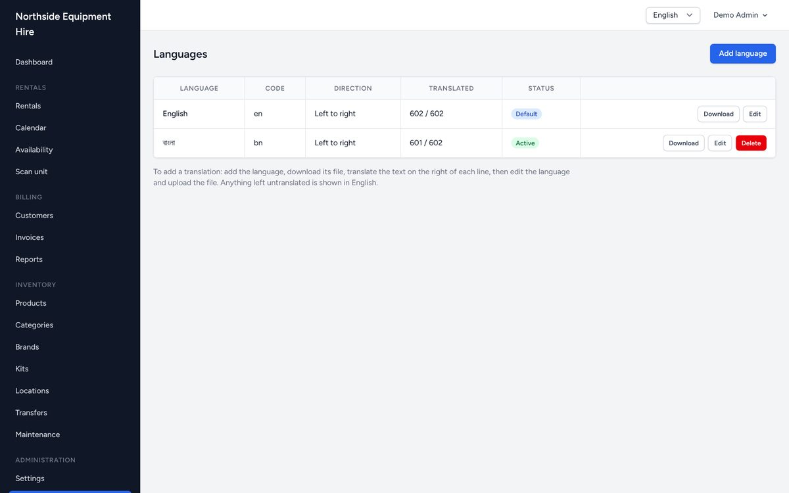
To add a language (Administration → Languages → Add language):
- Enter its code (
fr,ar,pt-BR…), its name and the text direction (right-to-left for Arabic, Hebrew, Urdu, Persian). - Download the language file. It is a JSON file listing every text in English on the left and the translation on the right.
- Translate the right-hand side only, keeping words that start with a colon (like
:name) unchanged. - Upload the file. It is checked and saved in
storage/app/lang; untranslated texts are shown in English.
Right-to-left languages mirror the whole layout. Contracts and invoice PDFs are always printed in English, because the PDF engine cannot shape Bengali or right-to-left scripts.
Customizing
RentDesk is a standard Laravel 13 application with Blade views, Tailwind CSS 4 and Alpine.js. The code is organised as:
| Path | Contents |
|---|---|
app/Services | Business rules: pricing, availability, bookings, handovers, deposits, late fees, invoices, reports. |
app/Http/Controllers, app/Http/Requests | Pages and form validation. |
resources/views | Blade templates (pdf/ holds the contract and invoice). |
resources/css, resources/js | Styles and scripts, compiled to public/build. |
lang/bn.json | Bengali translation. |
config/rentdesk.php | Defaults used until they are changed in Settings. |
After changing CSS or JavaScript, rebuild the assets on your computer and upload public/build:
npm install
npm run buildTo run the automated tests: composer install (with development packages), then php artisan test.
Updating
- Back up your database and the
.envfile andstorage/folder. - Upload the new files over the old ones. Do not overwrite
.envorstorage/. - Run the database updates and refresh caches and permissions:
php artisan migrate --force php artisan db:seed --class=RoleSeeder --force php artisan optimize:clear
The changelog for each version lists anything else to do.
Troubleshooting
“500 Server Error” or a blank page
Check storage/logs/laravel.log for the reason. Most often storage/ or bootstrap/cache/ is not writable, or the PHP version is older than 8.3. To see the error in the browser for a moment, set APP_DEBUG=true in .env — and set it back to false afterwards.
Pages other than the home page show “404 Not Found”
URL rewriting is not active. On Apache, make sure mod_rewrite is enabled, AllowOverride All is set for the folder and the .htaccess files were uploaded. On Nginx, use the configuration above.
The page looks unstyled
The public/build folder is missing or was not uploaded completely; upload it again. Also check that APP_URL in .env matches the address you use, including https://.
Brand logos do not show
The public/storage link is missing. Run php artisan storage:link in the main folder. If your host does not allow symbolic links or SSH, ask the host to create it.
Emails are not sent
Check the MAIL_* settings. With MAIL_MAILER=log, emails are only written to the log.
Late fees or maintenance tasks never appear
The cron job is not running. You can run the tasks by hand to test: php artisan rentals:calculate-late-fees.
The camera does not open on “Scan unit”
Phones only allow the camera on HTTPS sites. Install an SSL certificate (most hosts offer a free one).
I forgot the administrator password
Use “Forgot your password?” on the sign-in page (needs email). Without email, run php artisan tinker and then App\Models\User::where('email', 'you@example.com')->first()->update(['password' => 'new-password']);
Known limitations
- Invoices can be marked paid, but individual part-payments are not recorded.
- All times are UTC; there is no time-zone setting yet.
- Late fees are shown on the rental but not added to the invoice automatically.
- The public booking form does not send confirmation emails.
- PDFs are printed in English only.
Credits
RentDesk is built with these open-source projects, each under its own licence: Laravel, spatie/laravel-permission, barryvdh/laravel-dompdf (Dompdf), simplesoftwareio/simple-qrcode, FakerPHP (sample data), Tailwind CSS, Alpine.js, FullCalendar, Flatpickr, SweetAlert2 and html5-qrcode. The Figtree font is loaded from Bunny Fonts.
Support
Support is provided through the item's Support tab on CodeCanyon. Please include your RentDesk version, PHP version, hosting type and the relevant lines from storage/logs/laravel.log. Support covers questions about the item's features, help with installation problems and fixes for bugs; it does not include custom work or installation on your server.
Changelog
1.0.0
First release.